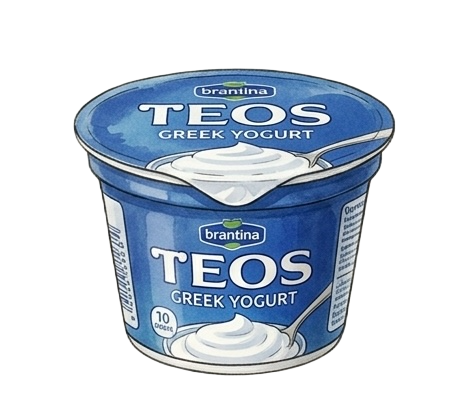

And here is our yogurt...
I hope you still like it. It was made with a bit of peace and a lot of honesty.
By the way, if you made it this far...
I guess we finally had that joint cooking session after all, haha.